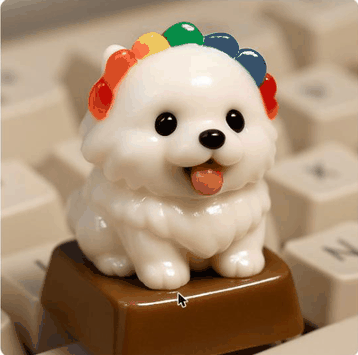

칩은 가로 스크롤을 없애고 두 줄로 접어서 7종이 한눈에 들어옵니다(375px 실폭 기준).
유도 방식만 다른 세 개를 나란히 놨습니다. 각 화면을 새로 고치듯 "다시 보기" 버튼으로 처음 등장 순간을 반복 재생할 수 있습니다.
반려동물 사진을 올리면 키캡 위 미니 피규어로 만들어 드려요.

등장 0.9초 뒤 키캡이 스스로 톡 눌렸다 올라옵니다(소리는 안 남). 4초 뒤 한 번 더 하고 멈춥니다.
반려동물 사진을 올리면 키캡 위 미니 피규어로 만들어 드려요.
키캡 가운데서 물결이 계속 퍼집니다. 누를 때까지 멈추지 않아요.
반려동물 사진을 올리면 키캡 위 미니 피규어로 만들어 드려요.
자가 시연 + 물결을 같이. 확실하지만 과할 수 있습니다.
localStorage에 기록해서 다음 방문에도 안 뜨게 할 생각입니다.